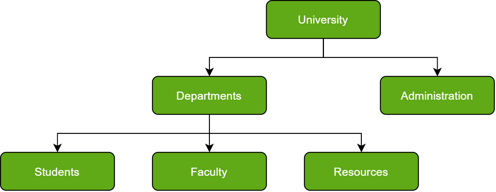
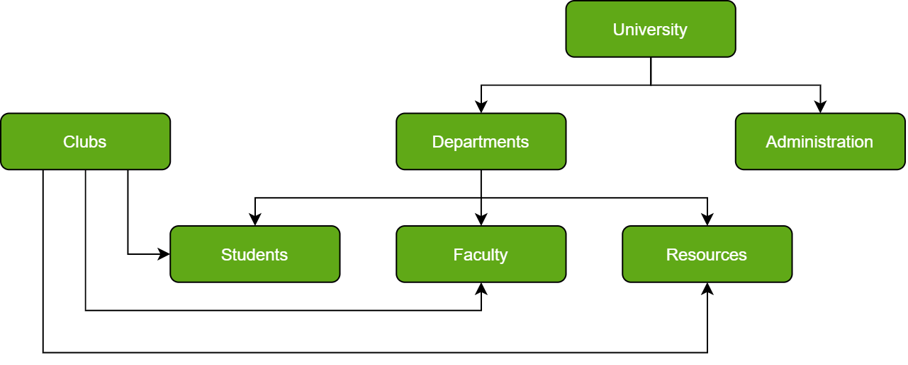
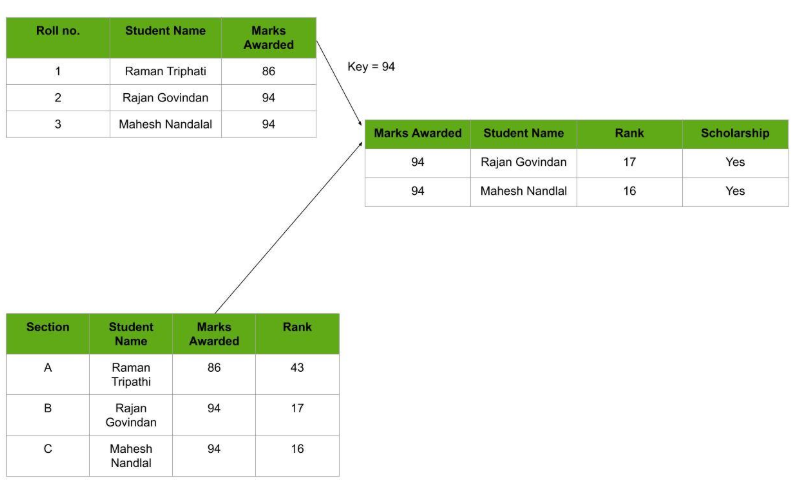
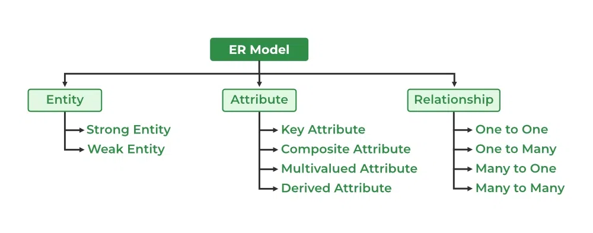

| S.N | Topic | Content Wise Marks | Working Hours |
|---|
| 1 | Database Management System | 8 | 12 |
| 2 | Data communication and Networking | 9 | 15 |
| 3 | Web Tech-II | 8 | 12 |
| 4 | C Programming-II | 8 | 12 |
| 5 | Object oriented programming | 6 | 10 |
| 6 | Software development life cycle | 6 | 10 |
| 7 | Recent Trends in technology | 5 | 9 |
| Total | 50 | 80 |
|---|
Computer System
Data and Information
Data is a collection of facts, figures, or information that can be processed, analyzed, or used for reasoning, discussion, or calculation. It can be numerical, textual, or even descriptions of things. Essentially, data is the raw material that can be transformed into meaningful information.
On that note, in the context of computers, "information" refers to data that has been processed and organized, making it meaningful and useful for the user or the computer itself
Features of Information
- 1. Accuracy:
- Information should be correct and free from errors, reflecting a faithful representation of the real world.
- 2. Relevance:
- The information should be pertinent and appropriate to the context in which it's being used.
- 3. Completeness:
- Information should include all necessary facts and details to be useful.
- 4. Timeliness:
- Information should be available when needed, before its value diminishes.
- 5. Accessibility:
- Information should be readily available and easy to find and understand.
- 6. Clarity:
- Information should be easy to understand and free from ambiguity.
- 7. Impartiality:
- Information should be free from bias and present a balanced view.
- 8. Reliability:
- Information should be trustworthy and consistent, ensuring its accuracy over time.
Database and its Purpose
A database is a collection of data that is organized, which is also called structured data. It can be accessed or stored in a computer system. The purpose of database is:
- DBMS maintains the reliability and accuracy of the information and returns it through enforced constraints and rules defined in the database schema that eliminates data redundancy and anomalies, respectively.
- Protecting confidential data is crucial and database systems successfully achieve this with their safeguards against unauthorized access.
- Databases ensure data consistency across various applications.
- Databases safeguards data against system crashes and failures is their main priority.
- Databases allow for the efficient storage and retrieval of data.
Common Terminologies in Database
- 1.Table
-
- A table is a collection of related data in an organized manner in the form of rows and columns. It is an organized arrangement of data and information in tabular form containing rows and columns, making it easier to understand and compare data.
- 2.Field
- In a database, a field is a single piece of data, typically within a table, representing a specific characteristic or attribute of a record. In other words it is the columb of a table in a database.
- 3.Record
- In a database, a record (also known as a row or tuple) is a collection of related data elements, often called fields or attributes, that describe a single entity or instance within a table.
- 4.Object
- In a database, a record (also known as a row or tuple) is a collection of related data elements, often called fields or attributes, that describe a single entity or instance within a table.
- 5.Key
- A "key" refers to a special type of column or a combination of columns that uniquely identifies a row in a table. Keys are essential for organizing data, ensuring data integrity, and establishing relationships between tables.
- 6.Data Dictionary
- It describes the meanings and purposes of data elements within the context of a project, and provides guidance on interpretation, accepted meanings and representation
Database Management System:
A DBMS is a system that allows users to create, modify, and query databases while ensuring data integrity, security, and efficient data access. Unlike traditional file systems, DBMS minimizes data redundancy, prevents inconsistencies, and simplifies data management with features like concurrent access and backup mechanisms. It organizes data into tables, views, schemas, and reports, providing a structured approach to data management.
The ojectives of a DBMS are:
- Data Integrity:
- Ensuring accuracy and consistency of data across the database.
- Data Security:
- Protecting sensitive information through access control and encryption.
- Data Manipulation:
- Providing tools to efficiently modify, update, and retrieve data.
- Data Storage:
- Organizing and storing large amounts of structured data systematically.
- Data Independence:
- Allowing changes in data structure without affecting application programs.
Advantages and Disadvantages of DBMS
Advantages:
- Data organization: A DBMS allows for the organization and storage of data in a structured manner, making it easy to retrieve and query the data as needed.
- Data integrity: A DBMS provides mechanisms for enforcing data integrity constraints, such as constraints on the values of data and access controls that restrict who can access the data.
- Concurrent access: A DBMS provides mechanisms for controlling concurrent access to the database, to ensure that multiple users can access the data without conflicting with each other.
- Data security: A DBMS provides tools for managing the security of the data, such as controlling access to the data and encrypting sensitive data.
- Backup and recovery: A DBMS provides mechanisms for backing up and recovering the data in the event of a system failure.
- Data sharing: A DBMS allows multiple users to access and share the same data, which can be useful in a collaborative work environment.
Disadvantages:
- Complexity: DBMS can be complex to set up and maintain, requiring specialized knowledge and skills.
- Performance overhead: The use of a DBMS can add overhead to the performance of an application, especially in cases where high levels of concurrency are required.
- Scalability: The use of a DBMS can limit the scalability of an application, since it requires the use of locking and other synchronization mechanisms to ensure data consistency.
- Cost: The cost of purchasing, maintaining and upgrading a DBMS can be high, especially for large or complex systems.
- Limited Use Cases: Not all use cases are suitable for a DBMS, some solutions don't need high reliability, consistency or security and may be better served by other types of data storage.
Types of Database Model:
1.Hierarchical
Hierarchical databases organize data in a tree-like structure, where each parent record can have multiple child records. This model works well for scenarios where data follows a predefined hierarchical relationship, where data is arranged in levels or ranks. For example, in a university, "University" is at the top level, while "Departments" and "Administration" are at lower levels, even though they are distinct entities.

2.Network
A network databases builds on the hierarchical model but allows child records to link to multiple parent records, creating a web-like structure of interconnected data. This results in a more flexible structure, often referred to as a graph model, where entities can be connected in many different ways. For example, in a university database, "Students," "Faculty," and "Resources" can be linked to both "Departments" and "Clubs," forming a flexible, two-directional relationship.

3.Relational
Relational databases are the most widely used type of database today. They store data in tables, with rows representing records and columns representing attributes of the records. In this database, every piece of information has a relationship with every other piece of information. This is on account of every data value in the database having a unique identity in the form of a record. Every row of data in the database is linked with another row using a primary key. Similarly, every table is linked with another table using a foreign key.

4.Entity Relational
The Entity-Relationship Model (ER Model) is a conceptual model for designing a databases. This model represents the logical structure of a database, including entities, their attributes and relationships between them.
- Entity: An objects that is stored as data such as Student, Course or Company.
- Attribute: Properties that describes an entity such as StudentID, CourseName, or EmployeeEmail.
- Relationship: A connection between entities such as "a Student enrolls in a Course".

Integrity Constraints and Types:
Integrity constraints are a set of rules used in DBMS to ensure that the data in a database is accurate, consistent and reliable. These rules helps in maintaining the quality of data by ensuring that the processes like adding, updating or deleting information do not harm the integrity of the database.
For example:
- Making sure every customer has a valid email address.
- Ensuring that an order in the database is always linked to an existing customer.
Types of Integrity Constraints
- Domain Constraints
- Domain constraints are a type of integrity constraint that ensure the values stored in a column (or attribute) of a database are valid and within a specific range or domain. In simple terms, they define what type of data is allowed in a column and restrict invalid data entry.
- Entity Integrity Constraints
- Entity integrity constraints state that primary key can never contain null value because primary key is used to determine individual rows in a relation uniquely, if primary key contains null value then we cannot identify those rows. A table can contain null value in it except primary key field.
- Key Constraints
- Key constraints ensure that certain columns or combinations of columns in a table uniquely identify each row. These rules are essential for maintaining data integrity and preventing duplicate or ambiguous records. Key constraint themselfs can further be calssified into:
- Primary Key Constraints
- It states that the primary key attributes are required to be unique and not null. That is, primary key attributes of a relation must not have null values and primary key attributes of two tuples must never be same.
- Unique Key Constraints
- A Unique Key ensures that the values in a column are unique, but unlike a primary key, it allows one NULL value.
- Referential integrity constraints
- Referential integrity constraints are rules that ensure relationships between tables remain consistent. They enforce that a foreign key in one table must either match a value in the referenced primary key of another table or be NULL. This guarantees the logical connection between related tables in a relational database.
Normalization
Normalization is an important process in database design that helps improve the database's efficiency, consistency, and accuracy. It makes it easier to manage and maintain the data and ensures that the database is adaptable to changing business needs.
The primary objective for normalizing the relations is to eliminate anomalies. Failure to reduce anomalies results in data redundancy, which may threaten data integrity and cause additional issues as the database increases.
Normal Forms
Normal Forms are different stages of normalization, and each stage imposes certain rules to improve the structure and performance of a database. There are many normal forms but currently we only require 3 normal forms. They are:
- 1.1NF
- A table is in 1NF if it satisfies the following conditions:
- All columns contain atomic values (i.e., indivisible/single values).
- Each row is unique (i.e., no duplicate rows).
- Each column has a unique name.
- The order in which data is stored does not matter.
- 2.2NF
- A relation is in 2NF if it satisfies the conditions of 1NF and additionally. No partial dependency exists, meaning every non-prime attribute (non-key attribute) must depend on the entire primary key, not just a part of it.
- 3.3NF
- A relation is in 3NF if it satisfies 2NF and additionally, there are no transitive dependencies. In simpler terms, non-prime attributes should not depend on other non-prime attributes.
Advantages of Normal Form
- Reduced data redundancy: Normalization helps to eliminate duplicate data in tables, reducing the amount of storage space needed and improving database efficiency.
- Improved data consistency: Normalization ensures that data is stored in a consistent and organized manner, reducing the risk of data inconsistencies and errors.
- Simplified database design: Normalization provides guidelines for organizing tables and data relationships, making it easier to design and maintain a database.
- Improved query performance: Normalized tables are typically easier to search and retrieve data from, resulting in faster query performance.
- Easier database maintenance: Normalization reduces the complexity of a database by breaking it down into smaller, more manageable tables, making it easier to add, modify, and delete data.
Disadvantages of Normal Form
- Complex Queries: Too many tables may result in multiple joins, making queries slow and difficult to manage.
- Performance Overhead: Additional processing required for joins in overly normalized databases may hurt performance, especially in large-scale systems.
Centralized Database
A Centralized Database is a type of database that is stored, located as well as maintained at a single location only. This type of database is modified and managed from that location itself.
Advantages
- Since all data is stored at a single location only thus it is easier to access and coordinate data.
- The centralized database has very minimal data redundancy since all data is stored in a single place.
- It is cheaper in comparison to all other databases available.
Disadvantages
- The data traffic in the case of a centralized database is more.
- If any kind of system failure occurs in the centralized system then the entire data will be destroyed.
Distributed Database
A distributed database is basically a type of database which consists of multiple databases that are connected with each other and are spread across different physical locations. The data that is stored in various physical locations can thus be managed independently of other physical locations.
Advantages
- This database can be easily expanded as data is already spread across different physical locations.
- The distributed database can easily be accessed from different networks.
- This database is more secure in comparison to a centralized database.
Disadvantages
- This database is very costly and is difficult to maintain because of its complexity.
- In this database, it is difficult to provide a uniform view to users since it is spread across different physical locations.
Difference Between Centralized database and Distributed Database
| Basis of Comparison |
Centralized Database |
Distributed Database |
| Definition |
Stored and maintained at a single location. |
Consists of multiple databases across different locations. |
| Access Time |
Higher for multiple users. |
Lower for multiple users. |
| Data Management |
Easier due to a single location. |
Complex due to multiple locations. |
| View |
Uniform and complete. |
May not be uniform. |
| Data Consistency |
More consistent. |
Less consistent due to possible redundancy. |
| Failure Handling |
Failure blocks access completely. |
Failure affects only part of the system. |
| Cost |
Less expensive. |
More expensive. |
| Maintenance |
Easier due to a single location. |
Difficult due to distributed nature. |
Database Security:
Database security refers to the measures and strategies used to protect databases from unauthorized access, cyber threats, and data corruption. It ensures confidentiality, integrity, and availability of stored information.
Challenges
Database security faces several challenges due to evolving cyber threats, system vulnerabilities, and human errors. Here are some key challenges:
- Unauthorized Access
- SQL Injection Attacks
- Data Breaches
- Malware & Ransomware
- Denial-of-Service (DoS) Attacks etc.
Security Measures
- Access Control
- Data Encryption
- Regular Backups
- SQL Injection Prevention
- Database Auditing & Monitoring
Database Administrator (DBA)
A Database Administrator (DBA) is responsible for managing, securing, and optimizing a database system to ensure efficient data storage, retrieval, and integrity. Their role is crucial in maintaining the reliability and performance of databases.
Key Responsibilities of a DBA
- Database Installation & Configuration – Setting up database software and ensuring proper system integration.
- Data Security & Access Control – Implementing authentication, encryption, and access restrictions to protect sensitive data.
- Backup & Recovery – Creating regular backups and disaster recovery plans to prevent data loss.
- Monitoring & Troubleshooting – Identifying and resolving database issues to ensure smooth operation.
- Data Integrity & Consistency – Enforcing rules to maintain accurate and reliable data.
SQL DATATYPES
SQL data types define the kind of data that can be stored in a database column. They ensure data integrity, efficiency, and compatibility across different database systems.
- CHAR
- Fixed-length string with a maximum length of 255 characters.
- VARCHAR
- Variable-length string with a maximum length of 65,535 characters.
- BINARY
- Fixed-length binary data with a maximum length of 255 bytes.
- VARBINARY
- Variable-length binary data with a maximum length of 65,535 bytes.
- TINYBLOB
- Binary data with a maximum length of 255 bytes.
- TINYTEXT
- Text data with a maximum length of 255 characters.
- TEXT
- Text data with a maximum length of 65,535 characters.
- LONGTEXT
- Text data with a maximum length of 4,294,967,295 characters.
- ENUM
- String object with a value chosen from a list of permitted values.
- BIT
- Bit-field type that can hold a single bit or a series of bits.
- TINYINT
- Integer with a range of -128 to 127 (or 0 to 255 unsigned).
- BOOLEAN
- Represents a true or false value, typically stored as TINYINT.
- INTEGER
- Standard integer type with a range of -2,147,483,648 to 2,147,483,647.
- FLOAT
- Single-precision floating-point number.
- DOUBLE
- Double-precision floating-point number.
- DECIMAL
- Fixed-point number with a specified precision and scale.
- DATE
- Stores date values (YYYY-MM-DD).
- DATETIME
- Stores date and time values (YYYY-MM-DD HH:MM:SS).